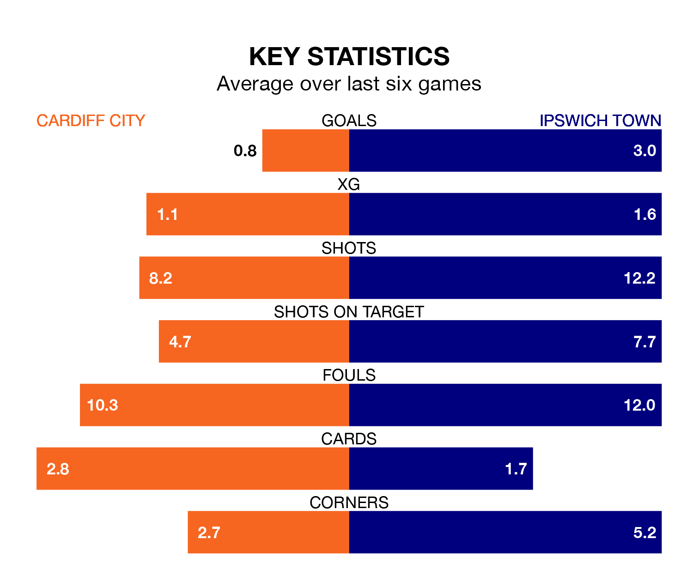

Ipswich Town visit Cardiff City at the Cardiff City Stadium on Saturday lunchtime on the back of six consecutive wins in the EFL Championship.
It means Ipswich have picked up the maximum 18 points from their last six games, and they face a Bluebirds side who have also won their last three matches, and collected 10 points from the last possible 18.
With 73 goals in 36 games so far this season, Ipswich are the league's highest scorers with 2.0 goals per game. And they are conceding fewer than average, letting in 47 goals at a rate of 1.3 per game.
Cardiff, meanwhile, are below average scorers, with 1.1 goals per game, compared to a league average of 1.4. They have conceded 1.3 goals per game.
Town are second in the table after 36 games, of which they have won 23 and drawn nine, earning 78 points.
City are eight places behind the Blues in 10th, with 15 wins and five draws putting them on 50 points.
In the last 10 years, Cardiff and Ipswich have played each other on nine occasions. Cardiff won five of them, Ipswich two, and they drew twice.
On average, the Bluebirds scored 1.7 goals and the Blues 1.1 in those matches.
Their last meeting was on September 2, when Ipswich won 3-2 at home.
The away side's Leif Davis is the league's most creative player, racking up 14 assists in 33 appearances so far this season.
For the Bluebirds, Joe Ralls has set up the most goals, having laid on seven assists in 27 games.
Cardiff's last match was on Wednesday, a 1-0 win against Huddersfield Town, with Famara Diedhiou getting the goal for the Bluebirds.
Ipswich beat Bristol City 3-2 last time out, on Tuesday, with Ali Al-Hamadi, Conor Chaplin and Davis on the scoresheet.
Saturday's match will be refereed by Oliver Langford, who has taken charge of 21 EFL Championship games so far this season, issuing five red cards and booking 73 players. He has awarded two penalties.
The last Cardiff game Langford refereed was a 3-0 home loss to Leeds United on January 13. He is yet to oversee a match featuring Ipswich this season.
Updated: 09:34 (UTC), 08/03/24